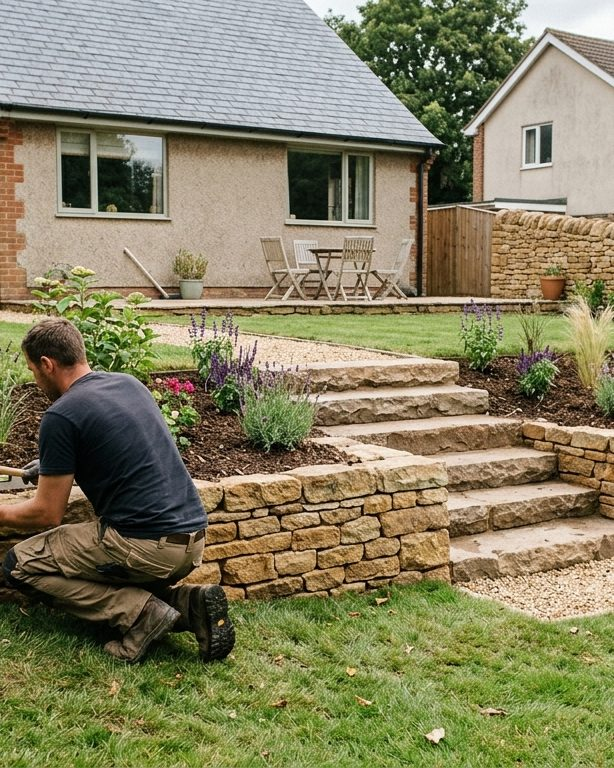

Paysagiste à Epône (78)
Création et entretien de jardins à Epône
Leo Sabourin aménage et entretient vos jardins à Epône et aux alentours : massifs, pelouses, plantations et bordures.
- Yvelines Epône (78)
- Devis sur demande
Nos prestations
Votre jardin, de la création à l'entretien
Quatre domaines d'intervention pour vos espaces extérieurs.
À propos
Un jardin soigné, près de chez vous
Leo Sabourin est paysagiste, installé à Epône, dans les Yvelines.
Contactez-le pour parler de votre jardin et demander un devis.
Nous contacter

Contact
Un projet de jardin ? Parlons-en.
Appelez pour décrire votre projet et demander un devis.